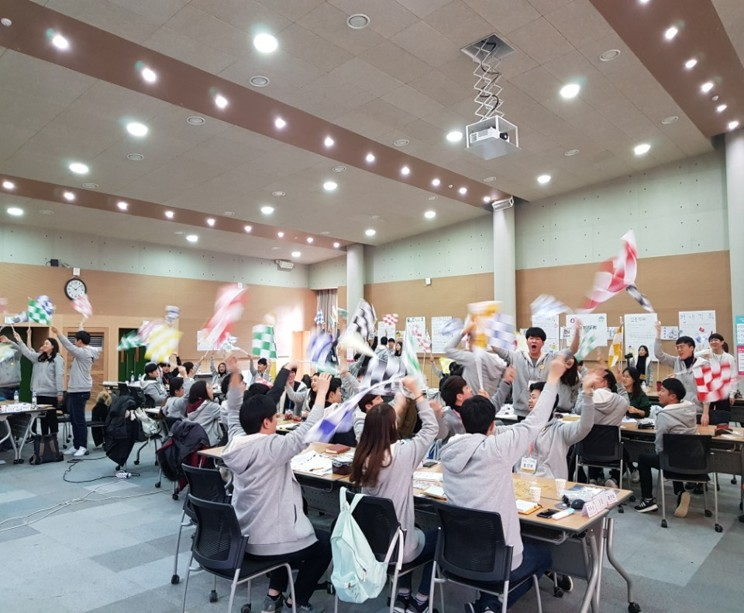
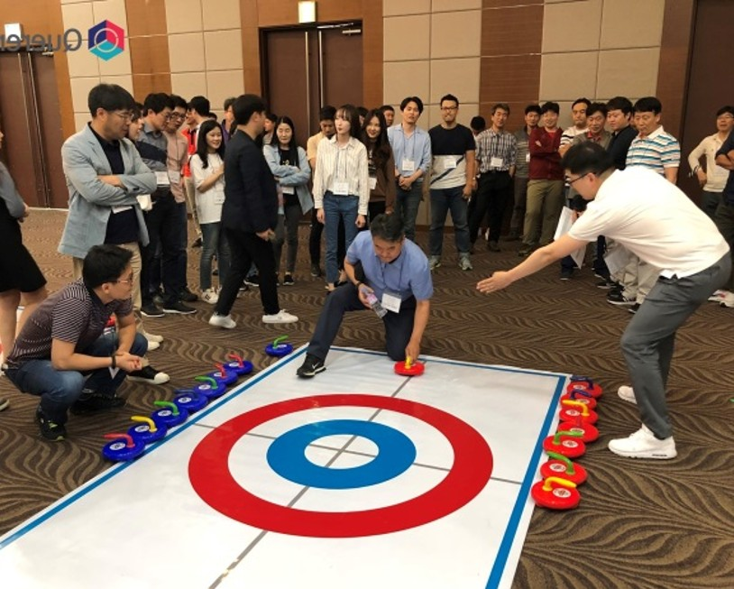
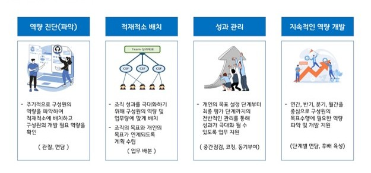
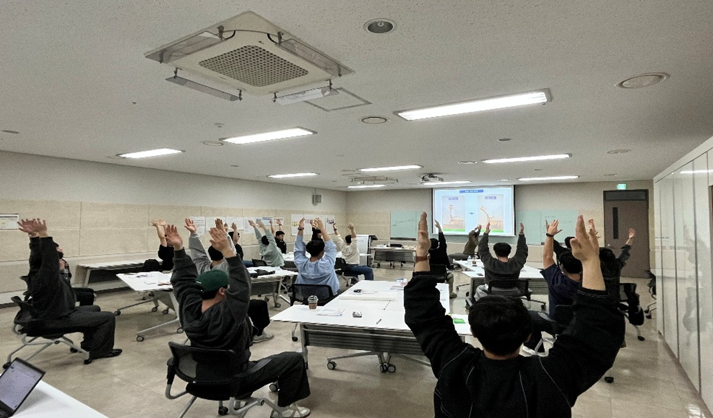
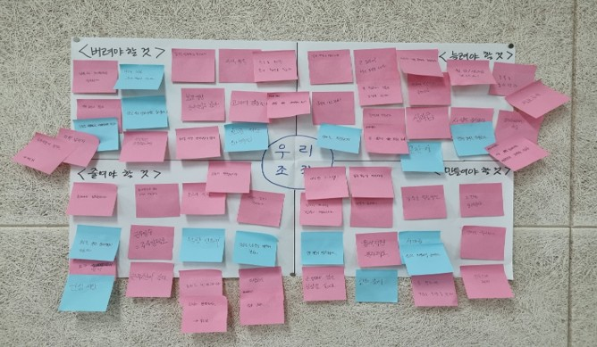
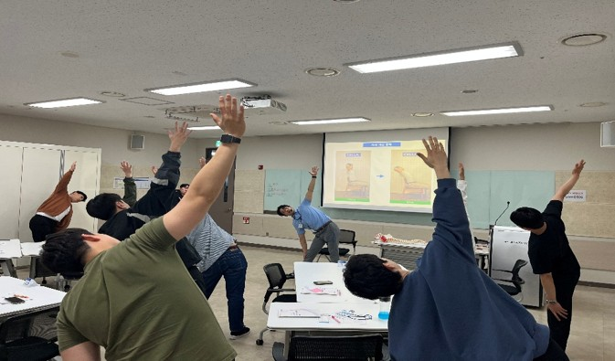

조직관리 핵심 프로그램
신규 입사자 교육부터 리텐션 교육 및 동기부여 과정까지 연결되는 교육 과정입니다.

신규 입사자 워크숍
신규입사자가 가져야할 자세,태도,비전을 교육합니다.

동기부여 및 리텐션
2~3년차가 오는 딜레마를 위한 리텐션 교육과정입니다.

평가제도 운영 역량 강화
공정성과 납득성을 높이는 평가 운영·보상 연계 포인트를 다룹니다.
조직관리 교육 현장 스케치
실제 워크숍과 교육 장면을 통해 조직문화 형성이 어떻게 이루어지는지 보여드립니다.




HRM 교육 소개
조직의 인사·조직관리 체계를 현대적 기준에 맞게 설계·운영할 수 있도록 하는 실무형 교육입니다. “제도 중심이 아닌 구성원 경험 중심의 HR 실행력”을 강화합니다.
- 직무·역량 기반 HR 제도 설계 실습
- 평가·보상 체계 운영 실무
- 조직문화 진단·개선 워크숍
- HR 데이터 활용 기초 및 실습